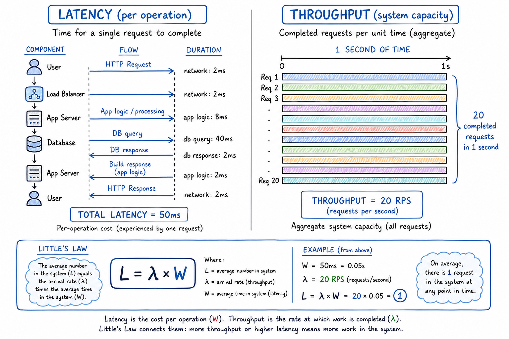
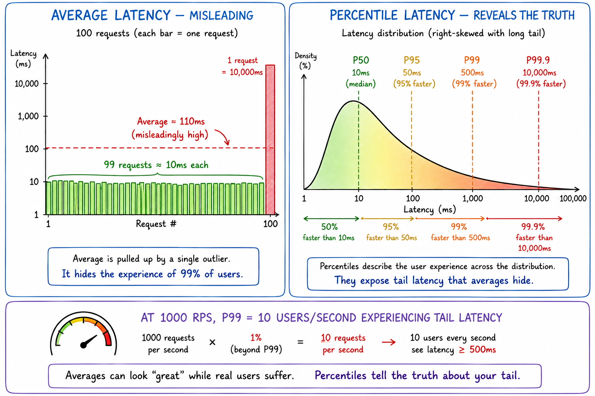
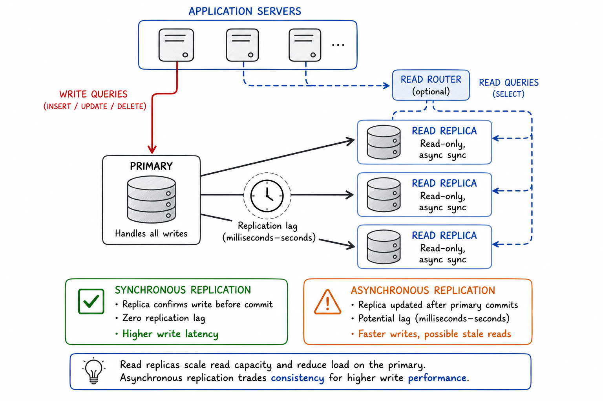
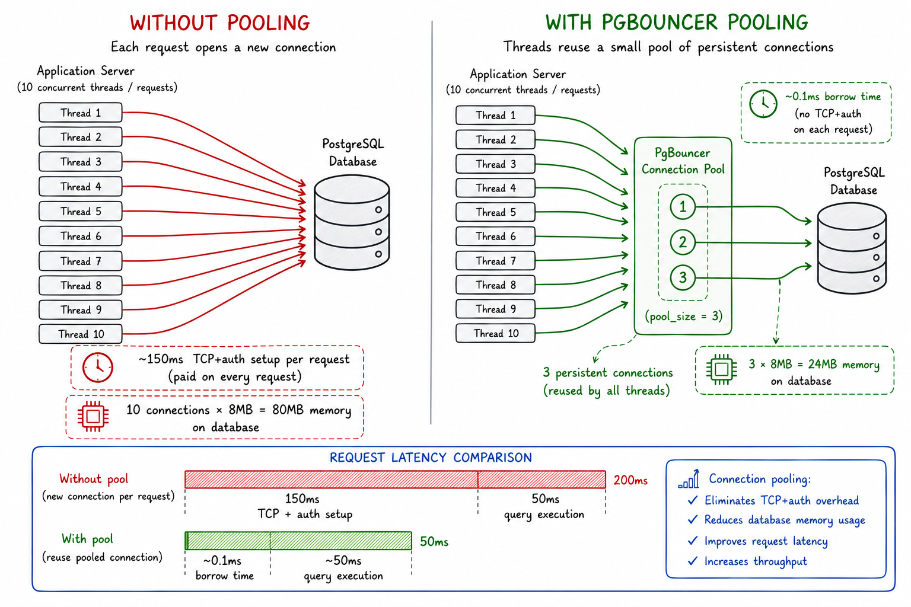
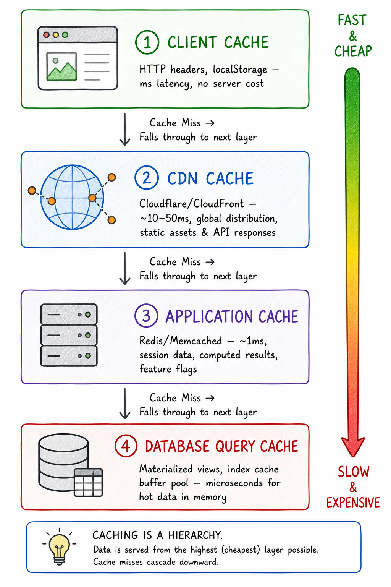
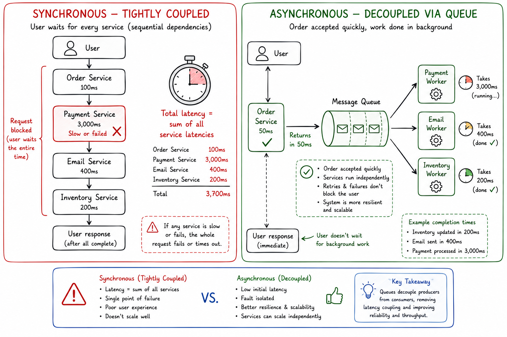
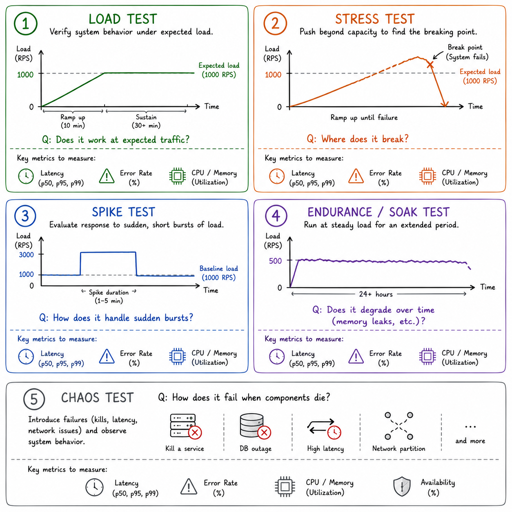
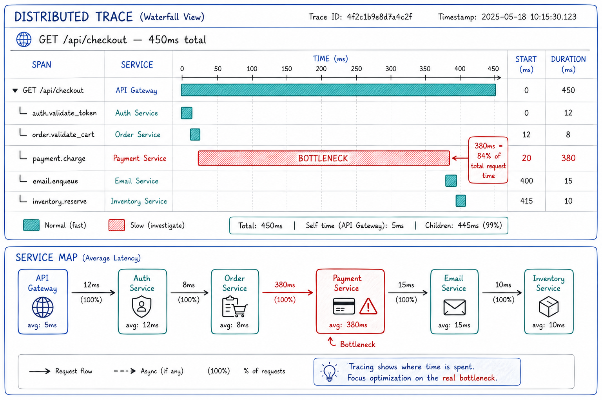
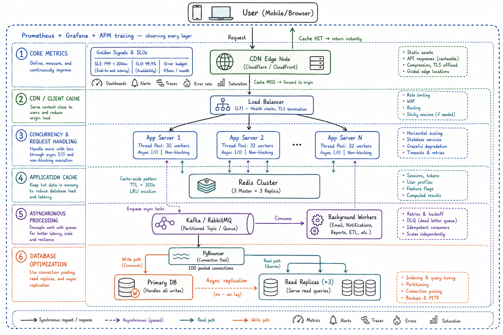

*From first-principles thinking to production-grade architecture — everything you need to make systems faster, more efficient, and more resilient under real-world load.*
There's a particular kind of humiliation that every engineer experiences at some point in their career. You've built something beautiful — clean code, elegant abstractions, solid test coverage. You demo it to your team, it flies. You push to production, traffic arrives, and then... it starts gasping. Latency climbs. Queues fill up. Your database CPU looks like a mountain range. Users start complaining.
Welcome to the gap between "it works" and "it performs."
System performance optimization is not a single technique or a configuration knob you flip. It is a discipline — a way of thinking about how every design decision compounds under real workload pressure. This article is a structured journey through that discipline. We'll build from first principles, reason through the tradeoffs that experienced engineers navigate daily, and arrive at a vocabulary and toolkit you can carry directly into your next system design review or production incident.
Whether you're a data scientist whose pipelines are timing out, an ML engineer building an inference stack, an analytics engineer watching dashboards crawl, or a software engineer who just got handed a "make this faster" ticket — this guide is written for you.
Let's start at the foundation.
Part 1: Core Performance Concepts — Building the Right Mental Model
Before you can optimize anything, you need to be precise about what you're trying to improve. "Make it faster" is not a specification. Performance is a multi-dimensional property, and tuning in one dimension without understanding the others is how engineers spend weeks making something worse.
Latency vs. Throughput: You Can't Always Have Both
Imagine two coffee shops. The first is a specialty shop — they spend four minutes crafting each drink to perfection, but there's only one barista. The second is a drive-through chain — each drink takes 90 seconds, but they have eight lanes running in parallel. Which shop is "faster"?
That's exactly the question latency and throughput ask, and they're measuring different things.
**Latency** is how long a single operation takes from start to finish. In a web service, it's the time from when a request enters your system to when the response exits. It's fundamentally an experience metric — users feel latency directly. A 300ms response feels snappy; a 3-second response feels broken.
**Throughput** is how many operations your system can complete per unit of time — requests per second, messages per minute, rows processed per hour. It's a capacity metric. You need enough throughput to serve your entire user base concurrently.
Here's why the tradeoff is subtle: many common optimizations improve one at the expense of the other. Consider batching. If you aggregate 100 database writes into a single bulk insert, your throughput may increase by an order of magnitude — you're doing far less I/O overhead per row. But the latency of each individual write increases, because the first write in the batch has to wait for 99 others before it's committed. This is a classic throughput-optimized design that's terrible for interactive latency.
The formal relationship between the two is captured by **Little's Law**, a beautifully simple result from queueing theory:
L = λ × WWhere:
- `L` = the average number of requests in the system (queue depth)
- `λ` (lambda) = the arrival rate (throughput)
- `W` = the average time a request spends in the system (latency)
If your latency doubles (W × 2), and your arrival rate stays the same, your queue depth also doubles. This is why performance regressions that seem minor in isolation can cascade into massive queue buildups under load. A service that handles 1,000 RPS at 50ms average latency has roughly 50 requests "in flight" at any moment. If a bad deploy pushes that to 500ms, you now have 500 in-flight requests — a 10x memory and connection surge, with no change in traffic.
The engineering takeaway: **match your optimization goal to your workload type**. Batch data pipelines are throughput-bound — you want to maximize records per second and don't care if a single record takes 10 minutes. Interactive web services are latency-bound — each user request must return in hundreds of milliseconds. Real-time ML inference often has to satisfy *both*: low latency under concurrent load. Understanding which type of system you're building changes every subsequent architectural decision.

Scalability vs. Responsiveness: Growing Fast Without Feeling Slow
These two concepts are easy to conflate, but they describe fundamentally different properties of a system.
**Scalability** is about capacity growth. Can the system handle 10× the current load with 10× the resources? Or does complexity, coordination overhead, and state management mean you need 50× the resources for 10× the load? A system that scales linearly is called **horizontally scalable** — you add more nodes, and capacity increases proportionally.
**Responsiveness** is about user experience under any load level. A system that can handle a million requests per second but takes 8 seconds to respond is scalable but not responsive. A single-threaded Python service running on a beefy VM might feel lightning-fast for your first 10 users but fall apart at 100. It's somewhat responsive but not scalable.
The interesting tension: scaling strategies often temporarily hurt responsiveness. When you introduce a distributed cache cluster, you add a network hop. When you shard your database, some queries that were simple primary-key lookups become cross-shard joins. When you add more API servers behind a load balancer, session state management gets complicated.
In cloud-native ML systems, this tension is especially acute. Consider a model-serving cluster. You can scale it horizontally by adding GPU instances — throughput goes up. But if your inference service has a cold-start problem (loading a 6GB model into VRAM takes 45 seconds), each new instance temporarily hurts P99 latency for requests that hit an unwarmed pod. You've improved scalability while creating a responsiveness hazard.
The discipline is to evaluate *both dimensions simultaneously*, and to test responsiveness not just at current load, but at 2×, 5×, and 10× projections. Systems that feel fast today often break at scale in non-obvious ways.
Defining "Fast": SLAs, SLOs, and SLIs
Here's an uncomfortable truth about performance optimization: without precise measurement definitions, you cannot know if you've succeeded. "Make it faster" is a wish. "Reduce the P99 latency of the /checkout endpoint from 800ms to 300ms as measured over 30-minute windows in production" is an engineering target.
The SLI → SLO → SLA hierarchy gives you a framework for moving from vague intuition to concrete commitments.
**Service Level Indicators (SLIs)** are the raw metrics you actually measure. Examples:
- Request latency (in milliseconds)
- Error rate (percentage of 5xx responses over total requests)
- Availability (percentage of time the service responds to health checks)
- Throughput (requests per second)
- Queue depth (number of messages waiting for processing)
An SLI is a number. It's what your monitoring system reports.
**Service Level Objectives (SLOs)** are the targets you set for your SLIs. Examples:
- 99% of requests should complete in under 200ms
- Error rate should be below 0.1% over any 5-minute window
- The pipeline should process at least 50,000 events per hour
SLOs are your engineering contracts with yourself. They're what you alert on, what you track in dashboards, and what guides architectural decisions. The key insight is that SLOs should be set based on *what users actually need*, not what the system currently achieves. Working backwards from user pain is far more useful than working forwards from current capability.
**Service Level Agreements (SLAs)** are formalized business commitments — often with financial penalties — that derive from your SLOs. If your SLO is 99.9% availability, your SLA might commit to 99.5% (with a buffer for unexpected failures) and offer billing credits when that's breached.
For most engineering optimization work, SLIs and SLOs are the actionable layer. Before starting any performance work, answer these questions:
1. What SLI am I trying to improve? (latency? error rate? throughput?)
2. What is the current measured value?
3. What is the target SLO?
4. How will I measure it? (which environment, which percentile, which endpoint?)
5. What's the error budget — how much SLO headroom exists before users notice?The error budget concept deserves special mention: if your SLO is 99.9% availability, you have 0.1% budget for downtime or degraded performance — roughly 43 minutes per month. When that budget is nearly exhausted, you stop deploying risky changes. When it's healthy, you can move fast. It's a forcing function for balancing velocity with reliability.
Why Averages Lie: The Power of Percentiles
This is arguably the single most important conceptual shift for engineers learning to think about performance seriously.
Consider this scenario: your service processes 100 requests. 99 of them complete in 10ms. One request hits a cold database partition and takes 10,000ms (10 seconds). What's the average latency?
Average = (99 × 10ms + 1 × 10,000ms) / 100 ≈ 110msYour dashboard shows 110ms average. Looks acceptable. But one percent of your users waited 10 full seconds. At 1,000 requests per second, that's 10 users per second experiencing catastrophic performance.
**Percentiles tell the truth that averages hide.** The Pn percentile answers: "What is the maximum latency experienced by the fastest N% of requests?"
- **P50 (median)**: Half of requests are faster than this. A better "typical" experience metric than mean.
- **P95**: 95% of requests are faster. This is often the first place tail latency problems appear. If P95 is much higher than P50, you have a heavy tail.
- **P99**: The experience of your 99th percentile user. At scale, P99 is experienced by a *lot* of real people. For a service handling 10,000 RPS, 1% is 100 requests per second — 6,000 users per minute.
- **P99.9 ("three nines")**: At very high scale (millions of requests per minute), even this tiny fraction represents thousands of users.
In distributed systems, percentile degradation compounds. If a user request requires calls to 5 downstream microservices, and each has a P99 latency of 100ms, the probability that at least one service exceeds its P99 on a given request is `1 - (0.99)^5 ≈ 5%`. Your user-visible P95 is effectively being degraded by the tail behavior of each dependency.
Here's how you'd compute percentiles in a Python-based monitoring context:
import numpy as np
latency_samples = [...] # list of response times in milliseconds
p50 = np.percentile(latency_samples, 50)
p95 = np.percentile(latency_samples, 95)
p99 = np.percentile(latency_samples, 99)
p999 = np.percentile(latency_samples, 99.9)
print(f"P50: {p50:.1f}ms")
print(f"P95: {p95:.1f}ms")
print(f"P99: {p99:.1f}ms")
print(f"P99.9:{p999:.1f}ms")In production systems, you'd use a histogram-based approximation (like HDR Histogram or the t-digest algorithm) to compute percentiles without storing every data point. Prometheus's `histogram_quantile()` function does this natively.
**Practical rule**: optimize until P99 is acceptable, not until P50 is optimal. Users don't average their experience — they remember their worst interaction.

Part 2: Database Optimization — Where Performance Often Goes to Die
If you've worked on enough production systems, you've noticed a pattern: when a system is slow, the database is the culprit roughly 70% of the time. Not always — sometimes it's network, sometimes it's bad code, sometimes it's GC pauses. But the database is the weight-bearing wall of most architectures, and it accumulates pressure from every component above it.
This section is a systematic tour of the tools and decisions that determine whether your database is an engine or an anchor.
Replication: One Copy Isn't Enough
At its core, database replication means keeping copies of your data on multiple nodes and keeping those copies synchronized. But why does this matter for performance?
Consider what happens to a single-node database as traffic grows. All reads and writes flow to one machine. Eventually, read throughput saturates the CPU, I/O bandwidth, or connection limit of that node. The naive response — get a bigger machine (vertical scaling) — works until it doesn't, and cloud instance families have a ceiling.
Replication solves this by allowing **reads to be distributed across replicas**. A primary node handles all writes and replicates changes to one or more read replicas. Application read queries are routed to replicas, freeing the primary to focus on the write path.

The critical tradeoff: **synchronous vs. asynchronous replication**.
In **synchronous replication**, a write is not acknowledged to the client until all replicas confirm they've received and applied it. Consistency is guaranteed — replicas are always current. But write latency increases because you're now waiting for N round trips instead of one, and a slow or unavailable replica can block all writes.
In **asynchronous replication**, the primary acknowledges the write as soon as it's committed locally, and replicas catch up in the background. Write latency stays low, but there's a **replication lag** — a window during which replicas may serve stale data. For many applications (social media feeds, analytics dashboards, recommendation APIs), slightly stale reads are acceptable. For financial transactions, inventory management, or anything requiring read-your-own-writes consistency, they're not.
PostgreSQL's streaming replication, MySQL's binlog replication, and MongoDB's replica sets all implement variants of this model. In cloud-managed databases, AWS RDS allows you to promote a read replica to primary in minutes — which is not just a performance tool but a critical disaster recovery mechanism.
Sharding vs. Partitioning: Dividing and Conquering Your Data
When a single database node — even with replicas — can't handle your write volume, you need to split the data itself across multiple nodes. This is where sharding and partitioning come in, and the distinction is worth being precise about.
**Partitioning** typically refers to dividing a single table (or dataset) into segments within the same database instance or cluster. PostgreSQL table partitioning, for example, lets you split a large `events` table by date range (`events_2024`, `events_2025`). Queries can be restricted to relevant partitions via **partition pruning**, dramatically reducing the data scanned.
**Sharding** is partitioning taken to the infrastructure level — splitting data across multiple, independent database instances, each responsible for a subset of the keyspace. Each shard is a completely separate database server.
The most common sharding strategies are:
# Hash-based sharding: deterministic, even distribution
def get_shard(user_id: int, num_shards: int) -> int:
return hash(user_id) % num_shards
# Range-based sharding: supports range queries, but risks hot spots
def get_shard(user_id: int) -> int:
if user_id < 1_000_000: return shard_0
elif user_id < 2_000_000: return shard_1
else: return shard_2**Hot spots** are sharding's most dangerous failure mode. If you shard by user ID but 30% of your traffic comes from a single power user or a single popular entity (imagine a viral post's author), one shard becomes the bottleneck while the others are idle. Consistent hashing (adding a virtual node layer) partially mitigates this by distributing traffic more evenly even when nodes are added or removed.
The engineering cost of sharding is real: cross-shard queries (e.g., "find all users whose age > 30 across all shards") require scatter-gather execution, multiplying query latency by the number of shards and aggregating results in application code. Foreign keys, transactions, and joins across shards become difficult or impossible to maintain, which often forces denormalization.
The CAP Theorem: Why You Can't Have Everything in a Distributed System
Eric Brewer's CAP theorem (formally proven by Gilbert and Lynch in 2002) is perhaps the most famous result in distributed systems engineering. It states that a distributed data store can guarantee at most two of the following three properties simultaneously:
- **Consistency (C)**: Every read returns the most recent write or an error
- **Availability (A)**: Every request receives a (non-error) response
- **Partition Tolerance (P)**: The system continues to operate despite network partitions
Here's the crucial nuance that's often lost: **in any real distributed system, partition tolerance is not optional**. Networks partition. Links fail. Packets drop. You must tolerate partitions. The real design choice is between **CP** (consistency under partitions, sacrificing availability) and **AP** (availability under partitions, sacrificing strong consistency).
| Database | CAP Choice | Characteristics |
|---|---|---|
| PostgreSQL (single node) | CA | Not truly distributed; partitions crash the system |
| Apache Cassandra | AP | Always available; eventual consistency; tunable |
| HBase / Zookeeper | CP | Strongly consistent; may reject requests during partition |
| DynamoDB | AP (by default) | Tunable to strong consistency at read cost |
| Spanner (Google) | CP | Uses atomic clocks to minimize availability cost |
For ML systems and data pipelines, this matters enormously. A feature store built on Cassandra will return data during a network partition, but that data may be stale. A feature store built on a CP system will return errors during the same partition. Which is worse: a model making predictions on stale features, or a model returning errors? The answer depends entirely on your application context — fraud detection systems likely prefer errors, while recommendation engines likely prefer stale-but-available features.
Indexing: The Art of Organized Retrieval
Without indexes, every query that doesn't use a primary key requires a **full table scan** — reading every row in the table to find the matching ones. On a 100-million-row table, that's catastrophic. Indexes are data structures that trade extra storage and write overhead for dramatically faster reads.
**B-Tree Indexes** are the default in most relational databases and the right choice for the vast majority of use cases. They organize data in a balanced tree structure (typically with branching factor ~100) where each leaf page stores a sorted range of values plus pointers to the actual rows. This structure supports:
- Equality queries: `WHERE user_id = 42` → O(log n) lookup
- Range queries: `WHERE created_at BETWEEN '2024-01-01' AND '2024-12-31'`
- `ORDER BY` on indexed columns (the data is pre-sorted)
- `IS NULL` queries (NULL values are stored in the tree)
**Hash Indexes** use a hash table to map each indexed value to a row pointer. They support *only* equality lookups — they have no concept of ordering and cannot serve range queries. They're extremely fast (O(1)) for equality, but narrow in applicability. Redis uses hash-based primary indexing. PostgreSQL supports hash indexes, but they're rarely chosen over B-Trees in practice.
**Bitmap Indexes** are specialized for low-cardinality columns — columns with few distinct values (gender, status, boolean flags). They represent each distinct value as a bitset where each bit corresponds to a row. Set operations (AND, OR, NOT) on these bitmaps are extremely fast and vectorizable. They're the backbone of columnar analytics databases like Apache Druid and data warehouses. They're terrible for high-cardinality columns (like user IDs) because the bitmaps become sparse and huge.
The **write amplification tradeoff**: every index on a table must be updated on every insert, update, and delete. A table with 10 indexes incurs 10× the write I/O overhead of a table with no indexes. For write-heavy workloads (event logging, telemetry ingestion, streaming writes), keeping the number of indexes minimal and targeted is critical. For read-heavy workloads (dashboards, search, OLAP), more indexes usually help.
-- Identifying slow queries that need indexes (PostgreSQL)
EXPLAIN ANALYZE
SELECT * FROM orders
WHERE customer_id = 12345
AND status = 'pending'
ORDER BY created_at DESC
LIMIT 10;
-- A composite index for this query pattern
CREATE INDEX idx_orders_customer_status_created
ON orders (customer_id, status, created_at DESC);The column order in a composite index matters: the leftmost column should be the most selective filter, and queries can use the index if they reference a prefix of the index columns.
Normalization vs. Denormalization: The Great Database Debate
**Normalization** is the process of structuring a relational database to eliminate redundancy by separating data into multiple related tables. A fully normalized schema (3NF or BCNF) stores each fact once, making updates surgical and ensuring consistency. It's the standard in OLTP (Online Transaction Processing) systems where data changes frequently.
**Denormalization** intentionally introduces redundancy by combining tables, storing precomputed aggregations, or duplicating data. The motivation is purely performance: instead of joining five tables at query time, all required fields live in one wide table. This is the standard pattern in OLAP (Online Analytical Processing) systems, data warehouses, and read-heavy analytics applications.
The schematic tension:
-- Normalized (3NF): fewer redundant bytes, more joins at query time
SELECT
o.order_id,
u.name AS customer_name,
p.product_name,
p.price,
o.quantity
FROM orders o
JOIN users u ON o.user_id = u.id
JOIN products p ON o.product_id = p.id
WHERE o.created_at > NOW() - INTERVAL '7 days';
-- Denormalized: one wide table, zero joins, faster reads
SELECT order_id, customer_name, product_name, price, quantity
FROM orders_denormalized
WHERE created_at > NOW() - INTERVAL '7 days';In modern data engineering, the denormalized wide table is embodied by the **fact table** in a star schema or the **One Big Table (OBT)** pattern popular in dbt-based data modeling. These patterns optimize for analytical query performance at the cost of update complexity and storage.
The choice depends on access patterns: if you're building a product catalog that's updated 10× a day and queried 1 million times a day, reading-optimized denormalization wins. If you're building a financial ledger where every fact must be exactly correct and updates are frequent, normalization protects data integrity.
Query Optimization: Making Your Database Do Less Work
A well-written query on a poorly indexed table can be orders of magnitude faster than a poorly-written query on a well-indexed one. Query optimization is the discipline of shaping queries so the database engine can execute them with minimal work.
The starting point is always the **query execution plan** — the database's description of how it intends to execute your query:
-- PostgreSQL: EXPLAIN ANALYZE shows the actual execution plan + timing
EXPLAIN (ANALYZE, BUFFERS, FORMAT JSON)
SELECT customer_id, COUNT(*) AS order_count, SUM(total_amount) AS revenue
FROM orders
WHERE order_date >= '2024-01-01'
GROUP BY customer_id
ORDER BY revenue DESC
LIMIT 100;Key things to look for in an execution plan:
- **Sequential scans (Seq Scan)** on large tables: usually a sign that an index is missing or not being used
- **Nested loop joins** on large datasets: can be O(n²), should often be hash joins or merge joins
- **Sort + Limit**: if a query does an expensive sort before a LIMIT, an index covering the ORDER BY column may eliminate the sort entirely
- **Actual rows vs. estimated rows**: large discrepancies mean the query planner's statistics are stale — run `ANALYZE` to update them
Common patterns that silently destroy query performance:
-- ❌ Functions on indexed columns prevent index use
WHERE DATE(created_at) = '2024-06-01'
-- ✅ Rewrite to use a range comparison that uses the index
WHERE created_at >= '2024-06-01' AND created_at < '2024-06-02'
-- ❌ Leading wildcard can't use B-Tree index
WHERE email LIKE '%@gmail.com'
-- ✅ Trailing wildcard CAN use B-Tree index
WHERE email LIKE 'user%'
-- ❌ OR conditions can prevent index merges in some databases
WHERE user_id = 1 OR user_id = 2 OR user_id = 3
-- ✅ Use IN instead
WHERE user_id IN (1, 2, 3)Materialized Views: Precomputed Answers at Your Fingertips
A materialized view is a database object that stores the *result* of a query, not just its definition. Where a regular view re-executes its defining query every time it's referenced, a materialized view stores the precomputed result set and can be indexed like a regular table.
They're particularly powerful for:
- Expensive aggregation queries run frequently (hourly revenue by region, daily active user counts)
- Complex multi-table joins that are read frequently but change infrequently
- Analytics dashboards that must render in milliseconds despite querying petabyte-scale tables
-- Creating a materialized view for a dashboard query
CREATE MATERIALIZED VIEW daily_revenue_by_product AS
SELECT
DATE(order_date) AS date,
product_category,
SUM(total_amount) AS daily_revenue,
COUNT(DISTINCT customer_id) AS unique_buyers
FROM orders o
JOIN products p ON o.product_id = p.id
WHERE order_date >= NOW() - INTERVAL '90 days'
GROUP BY 1, 2;
-- Add indexes to the materialized view
CREATE INDEX idx_mv_daily_revenue_date ON daily_revenue_by_product(date);
-- Refresh on a schedule
REFRESH MATERIALIZED VIEW CONCURRENTLY daily_revenue_by_product;The `CONCURRENTLY` keyword in PostgreSQL allows the view to be refreshed without locking — reads continue while the refresh runs in the background. This is critical for production dashboards where a lock would cause query timeouts.
The tradeoff: materialized views are stale between refreshes. For dashboards where "as of last hour" is acceptable, this is fine. For anything requiring real-time accuracy, you need a streaming system (Kafka + Flink or similar) to maintain live aggregations.
Connection Pooling: Stop Drowning Your Database in Handshakes
This is one of the most impactful and most underappreciated database performance techniques. Here's the problem it solves.
A database connection involves: a TCP handshake, TLS negotiation, authentication, session state initialization, and memory allocation on the database server. A PostgreSQL connection consumes roughly 5–10MB of server memory. This process takes 50–200ms. Under concurrent web traffic, if each request opens a fresh connection, you get:
1. 50–200ms added to every request's latency
2. Each connection consuming memory, quickly exhausting the database server
3. PostgreSQL's default connection limit of 100 being hit almost immediately under moderate load
A **connection pool** maintains a set of long-lived, pre-established connections. Application threads borrow a connection from the pool, use it, and return it — the connection is never closed. This eliminates the per-request connection overhead.

**PgBouncer** is the de-facto connection pooler for PostgreSQL in production. It operates in three modes:
| Mode | Behavior | Best For |
|---|---|---|
| Session pooling | Pool connection held for entire client session | Long-running connections |
| Transaction pooling | Pool connection returned after each transaction | Typical web applications |
| Statement pooling | Pool connection returned after each statement | Simple, stateless queries |
Transaction pooling is the most common choice for web applications — it allows far more application connections than database connections (10,000 app connections to 100 database connections) with minimal overhead.
# PgBouncer configuration (pgbouncer.ini)
[databases]
mydb = host=db.internal port=5432 dbname=production
[pgbouncer]
pool_mode = transaction
max_client_conn = 10000
default_pool_size = 100
min_pool_size = 10
server_idle_timeout = 600For ML inference services and data pipelines using Python, SQLAlchemy's connection pool (`QueuePool`) provides similar benefits at the ORM level.
Part 3: Caching Strategies — Speed at the Cost of Complexity
Caching is one of the most powerful tools in the performance engineer's toolkit and one of the most dangerous. Done well, it cuts latency by orders of magnitude and absorbs traffic spikes that would otherwise obliterate your backend. Done poorly, it serves stale data, wastes memory, or creates consistency nightmares that are nearly impossible to debug.
The guiding principle: **caching is a performance technique, not a correctness technique**. Every cache is a bet that the cost of occasionally serving stale data is lower than the cost of always fetching fresh data.
The Cache Stack: From Browser to Database
Modern systems can cache data at multiple independent layers, each with different characteristics:

**Client-side caching** (browser HTTP cache) is free performance — it costs you zero server resources. By setting appropriate `Cache-Control` headers, you can prevent browsers from re-requesting assets that haven't changed. For static assets (JS, CSS, images), `max-age=31536000` (1 year) with content-hash-based filenames is the standard pattern.
**CDN caching** distributes cached responses geographically close to users. A CDN edge node in Mumbai serving a user in Bangalore is dramatically faster than that user's request reaching a data center in Singapore. CDNs are particularly transformative for media-heavy applications and APIs with globally distributed users.
**Application-layer caching** (Redis, Memcached) is where most engineering complexity lives. This is the layer for caching expensive computations, database query results, ML model outputs, session data, and rate-limiting counters.
**Database-level caching** includes the buffer pool (in-memory page cache maintained by the database itself) and materialized views. The database's own memory management handles this automatically — your job is to size it appropriately (PostgreSQL's `shared_buffers` should typically be 25% of available RAM).
Write-through vs. Write-back: Choosing Your Durability Guarantee
When your application writes data, how does the cache stay consistent with the persistent store? Two fundamental strategies:
**Write-through**: Every write updates both the cache and the database synchronously before the write is acknowledged. The cache is always current. The cost is that writes are slower (you're waiting for two writes instead of one), and you're not getting the latency benefit of the cache on the write path.
Write-through flow:
Application → Cache.write(key, value)
↓ (synchronous)
Database.write(key, value)
↓
ACK to application**Write-back (write-behind)**: The application writes to the cache, which immediately acknowledges. The cache asynchronously syncs changes to the database in the background. Writes are fast — you're only waiting for the cache write — but there's a durability window where data is in the cache but not yet persisted. If the cache crashes during this window, those writes are lost.
Write-back flow:
Application → Cache.write(key, value) → immediate ACK
↓ (async, periodic)
Database.write(key, value)Write-back is common in storage systems where write throughput is critical — NVMe SSDs, database write buffers (WAL), Redis persistence with AOF in "everysec" mode. Write-through is preferred when durability is non-negotiable and write latency is acceptable.
Cache-aside (Lazy Loading): The Practical Default
Cache-aside, also called the lazy loading pattern, is the most common caching strategy in application code. The logic is simple:
import redis
import json
from typing import Optional
cache = redis.Redis(host='localhost', port=6379, decode_responses=True)
TTL_SECONDS = 300 # 5 minutes
def get_user_profile(user_id: int) -> dict:
cache_key = f"user:profile:{user_id}"
# 1. Try the cache first (cache hit path)
cached = cache.get(cache_key)
if cached:
return json.loads(cached)
# 2. Cache miss — fetch from the source of truth
user = db.query("SELECT * FROM users WHERE id = %s", user_id)
if not user:
return None
# 3. Populate the cache for future requests
cache.setex(cache_key, TTL_SECONDS, json.dumps(user))
return userThe beauty of cache-aside: only data that's actually requested gets cached. You don't preload cold data that might never be read, which is both memory-efficient and naturally adaptive to actual usage patterns. Hot paths (frequently accessed users, popular products) stay warm; cold paths don't pollute cache space.
The failure modes to watch for:
- **Cache stampede (thundering herd)**: When a popular cache key expires, hundreds of requests simultaneously find a cache miss and all go to the database. Protection: probabilistic early expiration or cache locking (only the first miss fetches; others wait).
- **Cold cache on startup**: When a service deploys or restarts with a cold cache, the initial traffic burst hits the database directly. This can be mitigated by cache warming (pre-populating the cache before traffic is shifted to the new instance).
Eviction Policies: When Memory Gets Full
A cache has finite memory. When it's full and a new entry must be stored, something must be evicted. The eviction policy determines what gets removed, and choosing the wrong one dramatically reduces cache effectiveness.
**LRU (Least Recently Used)**: Evicts the entry that hasn't been accessed for the longest time. The intuition is that things you used recently are more likely to be needed again. LRU is the default and correct choice for most workloads — it approximates "recency implies future need."
**LFU (Least Frequently Used)**: Evicts the entry accessed the fewest times historically. Better for workloads where some items are perennially popular (product catalog, configuration data) and should stay cached regardless of recent access gaps. More complex to implement (requires frequency counters).
**FIFO (First In, First Out)**: Evicts the oldest entry regardless of access patterns. Simple to implement but rarely the right choice — it ignores whether data is still actively being used.
**TTL (Time To Live)**: Expires entries after a fixed duration, regardless of access frequency. Not an eviction policy per se, but a freshness mechanism. TTL is often combined with LRU: entries are evicted by LRU when space is needed, and also expired by TTL when they're stale.
# Redis supports several eviction policies, configured globally
# In redis.conf:
maxmemory 2gb
maxmemory-policy allkeys-lru # Evict any key by LRU when maxmemory is reached
# Other common options:
# volatile-lru — evict only keys with TTL set, by LRU
# allkeys-lfu — evict any key by LFU
# allkeys-random — random eviction (rarely useful)
# noeviction — return errors when full (dangerous for caches, OK for persistent data)The **cache hit rate** (hits / total requests) is your primary health metric for eviction policy effectiveness. A well-tuned cache should achieve hit rates of 85–99% for stable workloads. A consistently low hit rate suggests either insufficient cache size, wrong eviction policy, or a workload that's too random to cache effectively.
Redis: The Swiss Army Knife of Caching
Redis (Remote Dictionary Server) has become the default in-memory data layer for modern web and ML systems. What makes it more than just a cache is its rich data structure support — it's not just a key-value store but a data structure server.
import redis
r = redis.Redis(host='localhost', port=6379, db=0)
# String — basic cache entry
r.setex("user:1:name", 300, "Alice")
# Hash — structured object without JSON serialization
r.hset("user:1", mapping={"name": "Alice", "age": "30", "plan": "pro"})
r.hget("user:1", "name")
# List — recent activity feed, queue
r.lpush("user:1:activity", "login", "purchase", "logout")
r.lrange("user:1:activity", 0, 9) # last 10 events
# Set — unique visitors, tags, membership
r.sadd("feature:beta_users", 101, 102, 103)
r.sismember("feature:beta_users", 101) # → True
# Sorted Set — leaderboard, rate limiting windows
r.zadd("leaderboard", {"alice": 9850, "bob": 7200, "carol": 9100})
r.zrevrank("leaderboard", "alice") # → 0 (rank 1)
# Atomic operations for distributed rate limiting
with r.pipeline() as pipe:
pipe.incr("ratelimit:user:1")
pipe.expire("ratelimit:user:1", 60)
count, _ = pipe.execute()
if count > 100:
raise RateLimitExceeded()For ML systems specifically, Redis is commonly used for:
- **Feature store caching**: Precomputed features for low-latency online inference
- **Model version routing**: Storing A/B test assignments and model variant weights
- **Inference result caching**: Caching expensive model outputs for identical inputs
- **Session context**: Storing conversation history or user state for stateful ML applications
Part 4: Messaging & Queues — Asynchrony as an Architecture
There's a mental model shift that separates junior engineers from senior engineers in system design: understanding that **not all work needs to happen immediately in response to a request**. The naive pattern is synchronous: user clicks "Place Order" → application processes payment → sends confirmation email → updates inventory → returns response. All of that happens while the user is waiting for the button click to resolve.
The better pattern: user clicks "Place Order" → application validates and records the intent → returns "Order received" → background workers process payment, send emails, update inventory asynchronously. The user gets a fast response; the heavy work happens in parallel without blocking them.
This is the core insight of messaging and queue-based architectures.
Why Async Messaging Changes Everything
Synchronous request chains have a critical weakness: **coupling**. If the email service is slow, the whole checkout is slow. If inventory updates are failing, checkouts fail. The chain is only as fast as its slowest link and only as reliable as its least reliable component.
Async messaging breaks these couplings by introducing a **queue** (or **message broker**) as an intermediary. Producers write messages to the queue. Consumers read from the queue at their own pace. The producer doesn't need to know who the consumers are, how fast they are, or whether they're even running. This is the **publish-subscribe** decoupling model.

The performance benefits of async messaging:
1. **Absorbs traffic spikes**: If your system normally handles 500 requests/second but a flash sale drives 5,000/second, the queue acts as a shock absorber. Messages accumulate in the queue rather than overwhelming downstream services.
2. **Independent scaling**: Email workers and payment workers can scale independently based on their own queue depths, rather than both scaling uniformly with web traffic.
3. **Failure isolation**: A failed email service doesn't fail the checkout. Messages wait in the queue until the email service recovers.
4. **Improved overall throughput**: Multiple consumers can drain the queue in parallel, multiplying processing capacity.
RabbitMQ vs. Kafka: Push vs. Pull, and When Each Wins
These are the two dominant messaging platforms, but they're built around different mental models and serve different use cases.
**RabbitMQ** is a traditional message broker implementing the AMQP protocol. Brokers push messages to consumers. Key characteristics:
- Messages are *consumed and deleted*: once a consumer ACKs a message, it's gone
- Complex routing: exchanges, bindings, dead-letter queues, topic routing
- Lower latency for small message volumes
- Ideal for task queues: email sending, video transcoding jobs, webhook delivery
**Kafka** is a distributed log, not a traditional queue. Consumers pull messages at their own pace, and messages are retained for a configurable period (days, weeks, or indefinitely). Key characteristics:
- **Replayability**: consumers can rewind and re-read old messages — invaluable for debugging, ML training data, event sourcing
- **High throughput**: handles millions of messages/second through sequential disk writes
- **Consumer groups**: multiple consumer groups can each independently read the full stream
- Ideal for event streaming: analytics, ML training data pipelines, CDC (Change Data Capture), audit logs
RabbitMQ: "Process this task once, then it's done"
Kafka: "Record this event permanently; multiple systems can read it at their own pace"From an ML engineering perspective, Kafka is increasingly central to production ML infrastructure. A user interaction event (click, purchase, search) is written to Kafka once and consumed independently by: the feature store for training data collection, the real-time feature computation service for online serving, the A/B testing framework for experiment logging, and the data warehouse for analytics. One event, four consumers, zero coupling.
Delivery Guarantees: At-least-once, Exactly-once, and the Hidden Costs
When a message is sent, you need a model for how reliably it arrives. Three delivery semantics exist, with increasing complexity and cost:
**At-most-once**: The broker sends the message once and doesn't retry on failure. Messages may be lost, but are never duplicated. Appropriate for metrics, telemetry, or anything where an occasional lost data point is acceptable.
**At-least-once**: The broker retries until it gets an acknowledgment. Messages are guaranteed to arrive, but may be delivered more than once (retries after network failures, consumer crashes). This is the default in most messaging systems and the most common production choice.
**Exactly-once**: Each message is delivered precisely once, with no duplicates and no losses. Technically the hardest to achieve — it requires distributed transactions or idempotent consumers + deduplication. Kafka introduced exactly-once semantics (EOS) in version 0.11. The overhead is real: transaction coordination adds latency and reduces throughput.
The practical engineering takeaway: **design for at-least-once delivery with idempotent consumers** rather than paying the cost of exactly-once infrastructure. It's usually cheaper to make your consumers safe to replay (via idempotency keys or upsert semantics) than to enforce exactly-once delivery at the broker level.
Consumer Idempotency: Safe at Any Speed
An idempotent operation is one that produces the same result regardless of how many times it's applied. In messaging, a consumer is idempotent if processing the same message twice produces the same outcome as processing it once.
Why does this matter? Because in any reliable messaging system, you will receive duplicate messages. Network timeouts cause producers to retry. Consumer crashes before ACKing cause redelivery. Kafka consumer group rebalances can replay recent messages. Designing your consumers to handle this gracefully is not optional — it's essential.
import hashlib
from sqlalchemy import text
def process_payment_event(event: dict):
"""Idempotent payment processor using deduplication."""
# Create a deterministic idempotency key from message content
idempotency_key = event.get("idempotency_key") or hashlib.sha256(
f"{event['user_id']}:{event['amount']}:{event['timestamp']}".encode()
).hexdigest()
with db.begin() as conn:
# Check if we've already processed this event
existing = conn.execute(
text("SELECT id FROM processed_payments WHERE idempotency_key = :key"),
{"key": idempotency_key}
).fetchone()
if existing:
# Already processed — safe to skip
return {"status": "duplicate", "id": existing.id}
# Process the payment
result = charge_payment_gateway(event)
# Record the processing (atomic with payment)
conn.execute(
text("""
INSERT INTO processed_payments (idempotency_key, user_id, amount, status)
VALUES (:key, :user_id, :amount, :status)
"""),
{"key": idempotency_key, "user_id": event["user_id"],
"amount": event["amount"], "status": result.status}
)
return {"status": "processed"}Idempotency is also achievable through **upsert semantics**: `INSERT ... ON CONFLICT DO UPDATE` in PostgreSQL naturally handles duplicate events without explicit deduplication tables. The choice between explicit idempotency tables and upserts depends on whether you need audit trails of duplicates (idempotency tables win) or just correct final state (upserts are simpler).
Part 5: Concurrency & Parallelism — Getting More Done at Once
Modern CPUs have many cores. Modern workloads involve significant waiting — waiting for network responses, disk reads, database queries. Concurrency and parallelism are the mechanisms for ensuring that available CPU time and I/O bandwidth are not wasted waiting when other useful work could be progressing.
The key distinction: **parallelism** is doing multiple things simultaneously (physically running on multiple CPU cores). **Concurrency** is managing multiple tasks that are in progress at the same time, even if only one is actually executing at any instant (interleaving progress on multiple tasks).
Threads vs. Processes: Sharing vs. Isolation
Both threads and processes are units of execution, but they operate in different memory contexts.
**Threads** exist within a single process and share the same memory space. Communication between threads is fast (shared variables), but shared state requires synchronization (locks, semaphores, atomic operations) to prevent data corruption. Creating a thread is lightweight (~50–100μs in most OSes, ~1MB default stack).
**Processes** each have their own memory space. Communication requires inter-process communication (IPC) mechanisms — pipes, sockets, shared memory. Processes are isolated — a crash in one doesn't corrupt another. Creating a process is heavier (~5–50ms, copying the parent's memory space).
For Python specifically, the **Global Interpreter Lock (GIL)** adds an important wrinkle: only one Python thread executes Python bytecode at a time, even on multi-core hardware. This means Python threads don't provide true CPU parallelism for CPU-bound tasks. For I/O-bound tasks (network requests, disk reads), threads work fine — a thread waiting for I/O releases the GIL, allowing other threads to run.
# Python: CPU-bound tasks need multiprocessing for true parallelism
from concurrent.futures import ProcessPoolExecutor, ThreadPoolExecutor
import numpy as np
data_chunks = [np.random.randn(1_000_000) for _ in range(8)]
def compute_stats(chunk):
return {"mean": np.mean(chunk), "std": np.std(chunk)}
# CPU-bound (heavy numpy): use processes to bypass GIL
with ProcessPoolExecutor(max_workers=8) as pool:
results = list(pool.map(compute_stats, data_chunks))
# I/O-bound (network calls, DB queries): threads are fine
import requests
urls = ["https://api.example.com/data/" + str(i) for i in range(50)]
def fetch(url):
return requests.get(url).json()
with ThreadPoolExecutor(max_workers=20) as pool:
api_results = list(pool.map(fetch, urls))Thread Pools: Managing the Chaos
Uncontrolled thread creation is a common performance anti-pattern. If each incoming request spawns a new thread and you receive 10,000 concurrent requests, you've attempted to create 10,000 threads. That's potentially 10GB of stack space, thousands of context switches per millisecond, and near-certain OOM death.
A **thread pool** maintains a fixed, pre-created set of worker threads. Work items are submitted to a queue; available workers pick them up. The pool size limits concurrency, protecting system resources while still executing work efficiently.
from concurrent.futures import ThreadPoolExecutor
from queue import Queue
import threading
class BoundedThreadPool:
"""Thread pool with back-pressure via bounded queue."""
def __init__(self, max_workers: int, max_queue_size: int):
self.executor = ThreadPoolExecutor(max_workers=max_workers)
self.semaphore = threading.Semaphore(max_workers + max_queue_size)
def submit(self, fn, *args, **kwargs):
if not self.semaphore.acquire(blocking=False):
raise RuntimeError("Thread pool queue full — applying back-pressure")
future = self.executor.submit(fn, *args, **kwargs)
future.add_done_callback(lambda f: self.semaphore.release())
return futureThe art is in sizing the pool. For I/O-bound work, pools can be larger than the number of CPU cores — threads spend most of their time waiting, so you can have many more in-flight than you have cores. A common heuristic: `pool_size = num_cores × (1 + wait_time / compute_time)`. For CPU-bound work, the optimal pool size is typically equal to the number of available CPU cores (to minimize context-switching overhead).
Asynchronous Non-blocking I/O: The Modern Way
Traditional blocking I/O is wasteful: a thread starts a network request, then sits idle waiting for bytes to arrive. Those wasted CPU cycles could be executing other work. Asynchronous, non-blocking I/O solves this by registering *callbacks* or *coroutines* with an event loop — when the I/O completes, the event loop wakes up the waiting coroutine to continue.
Python's `asyncio`, Node.js's event loop, Rust's Tokio, and Go's goroutines all implement variations of this model.
import asyncio
import aiohttp
import asyncpg
async def get_user_with_features(user_id: int):
"""Concurrently fetch user profile and ML features without blocking."""
async with aiohttp.ClientSession() as http_session:
# Launch both I/O operations concurrently — no waiting for each other
profile_task = asyncio.create_task(
http_session.get(f"https://api.internal/users/{user_id}")
)
features_task = asyncio.create_task(
fetch_features_from_store(user_id) # async DB call
)
# Wait for both to complete (concurrent, not sequential)
profile_response, features = await asyncio.gather(
profile_task, features_task
)
profile = await profile_response.json()
return {**profile, "features": features}
# Sequential async: ~200ms total (each awaited separately)
# Concurrent async: ~100ms total (both in-flight simultaneously)The `asyncio.gather()` pattern is the key — it starts multiple coroutines simultaneously and waits for all of them to complete. If each I/O call takes 100ms, sequential awaiting costs 200ms total. Concurrent execution costs ~100ms (the max of the two, since they run in parallel). At scale, this difference is dramatic.
The constraint: non-blocking I/O requires that all operations in the async pipeline use async-compatible libraries. Calling a blocking I/O function from an async context (e.g., using the synchronous `requests` library in an `asyncio` service) blocks the event loop, causing all other coroutines to wait. Use `aiohttp` for HTTP, `asyncpg` for PostgreSQL, `aiofiles` for file I/O.
Race Conditions and Deadlocks: The Dark Side of Concurrency
Concurrent execution provides performance gains, but it introduces a class of bugs that are famously difficult to reproduce and debug: **race conditions** and **deadlocks**.
A **race condition** occurs when the correctness of a computation depends on the relative timing of two concurrent operations. The classic example:
# ❌ Unsafe: check-then-act is not atomic
balance = db.get("account:123:balance") # read: 100
if balance >= 50:
db.set("account:123:balance", balance - 50) # write: 50
# If two threads execute this concurrently:
# Thread A reads 100, Thread B reads 100
# Thread A writes 50, Thread B writes 50
# Final balance: 50 (should be 0 — $50 double-spent)
# ✅ Safe: use atomic database operations
db.execute("""
UPDATE accounts SET balance = balance - 50
WHERE id = 123 AND balance >= 50
""")
# OR use optimistic locking with version numbers
# OR use SELECT FOR UPDATE to acquire a row lockA **deadlock** occurs when two or more processes are each waiting for the other to release a lock, creating a circular wait that never resolves:
Thread A holds Lock 1, wants Lock 2
Thread B holds Lock 2, wants Lock 1
→ Neither can proceed. System is stuck.Prevention strategies:
- **Lock ordering**: Always acquire locks in a consistent global order (e.g., always lock table A before table B). Circular waits become impossible if all threads respect the same ordering.
- **Lock timeouts**: Set a maximum wait time for lock acquisition. If exceeded, roll back and retry with backoff. PostgreSQL's `lock_timeout` and `deadlock_timeout` parameters handle this automatically.
- **Optimistic concurrency**: Avoid locks entirely by using version numbers and retrying on conflict. Works well when contention is rare.
- **Minimize lock scope**: Hold locks for the shortest possible time. Long-running transactions that hold row locks are a common source of both contention and deadlocks.
Part 6: Testing & Monitoring — Closing the Loop
All the optimization techniques in the world are useless without the ability to measure their impact and detect when performance regresses. Testing and monitoring close the loop between architectural decisions and their real-world outcomes.
The Performance Testing Taxonomy
Performance testing is not one thing — it's a family of related practices, each asking a different question about your system's behavior:

**Load Testing**: Simulate expected production traffic to verify that the system meets its SLOs under normal conditions. You're confirming that nothing is obviously broken, not finding limits. Tools: [k6](https://k6.io), Apache JMeter, Locust.
# Locust load test — simulates realistic user behavior
from locust import HttpUser, task, between
class APIUser(HttpUser):
wait_time = between(1, 3) # Realistic think time between requests
@task(3) # 3x more likely than checkout
def view_product(self):
self.client.get("/api/products/popular")
@task(1)
def checkout(self):
self.client.post("/api/checkout", json={
"items": [{"sku": "ABC123", "qty": 1}],
"payment_token": "test_token"
})**Stress Testing**: Increase load beyond expected capacity to find the breaking point. The goal is discovering failure modes, not avoiding them. What happens at 2× load? Does the system degrade gracefully (serving slower responses) or fail catastrophically (returning 500 errors)?
**Spike Testing**: Apply a sudden, sharp increase in load for a brief period, then return to normal. This simulates flash sales, viral content, or the "Slashdot effect." The key question: how does the system behave during the spike, and how quickly does it recover afterward?
**Endurance/Soak Testing**: Run the system at moderate load for an extended period (24 hours, 1 week). This reveals long-run degradation caused by memory leaks, connection pool exhaustion over time, log rotation issues, or garbage collection pressure accumulating.
The Observability Stack: APM, Prometheus, and Grafana
Observability is the ability to understand a system's internal state from its external outputs. For performance engineering, the three pillars are **metrics** (aggregate numerical measurements), **traces** (end-to-end request execution paths), and **logs** (discrete event records).
**Prometheus** is the de facto time-series metrics system in cloud-native environments. It scrapes metrics from services at regular intervals and stores them as labeled time series. Its query language, PromQL, is expressive and powerful:
# prometheus.yml — scrape configuration
scrape_configs:
- job_name: 'api-service'
scrape_interval: 15s
static_configs:
- targets: ['api:8080']# Python service exposing Prometheus metrics
from prometheus_client import Counter, Histogram, start_http_server
import time
REQUEST_COUNT = Counter(
'http_requests_total',
'Total HTTP requests',
['method', 'endpoint', 'status_code']
)
REQUEST_LATENCY = Histogram(
'http_request_duration_seconds',
'HTTP request latency',
['endpoint'],
buckets=[0.01, 0.025, 0.05, 0.1, 0.25, 0.5, 1.0, 2.5, 5.0]
)
@app.route('/api/users/<int:user_id>')
def get_user(user_id):
start = time.time()
try:
result = fetch_user(user_id)
REQUEST_COUNT.labels('GET', '/api/users', 200).inc()
return result
finally:
REQUEST_LATENCY.labels('/api/users').observe(time.time() - start)# PromQL: P99 latency over the last 5 minutes
histogram_quantile(0.99,
sum(rate(http_request_duration_seconds_bucket[5m])) by (le, endpoint)
)
# Error rate
sum(rate(http_requests_total{status_code=~"5.."}[5m]))
/ sum(rate(http_requests_total[5m]))**Grafana** transforms Prometheus data into interactive dashboards. A well-designed Grafana dashboard for an API service typically includes: request rate (RPS), error rate (%), P50/P95/P99 latency panels, infrastructure metrics (CPU, memory, network I/O), and database connection pool utilization.
**APM (Application Performance Monitoring)** tools like Datadog APM, New Relic, or Jaeger add **distributed tracing** — the ability to follow a single request's execution path across multiple services and see exactly where time is spent. A trace shows that a 500ms request spent 10ms in the API gateway, 20ms in the auth service, 450ms in the database (and specifically which query), and 20ms in serialization. This makes bottleneck identification surgical.

Bottleneck Identification: The Scientific Method of Performance Work
The cardinal rule of performance optimization: **never guess where the bottleneck is — measure it**. Engineers who optimize based on intuition consistently spend time on components that contribute 5% of latency while ignoring the component responsible for 80% of it.
The systematic approach:
1. **Start at the user-visible symptom**: high P99 latency, elevated error rate, slow dashboard. Define the SLO being violated.
2. **Trace the request path**: Use APM/distributed tracing to see where time is spent across services. Identify the single step contributing the most to total latency.
3. **Profile the bottleneck service**: Once you've identified the service, drill into its internals. For CPU bottlenecks, use `py-spy`, `perf`, or language-specific profilers. For database bottlenecks, use `pg_stat_statements` or slow query logs.
4. **Validate the hypothesis**: Before fixing anything, confirm that your proposed change addresses the bottleneck. A/B test configuration changes or feature flags in production (with gradual rollout) to measure actual impact.
5. **Measure the improvement**: Compare P50, P95, P99 before and after. Update SLO dashboards to reflect the new baseline.
6. **Identify the next bottleneck**: Fixing one bottleneck often reveals the next. This is Amdahl's Law in practice — the system's performance is now limited by whatever was the second-slowest component.
Common bottleneck categories and their diagnostic tools:
| Bottleneck | Symptoms | Diagnostic Tool |
|---|---|---|
| Slow database queries | High DB latency in traces | `pg_stat_statements`, EXPLAIN ANALYZE |
| Missing indexes | Sequential scans in query plans | Database query planner output |
| N+1 query problem | Many small queries in traces | ORM query logging, APM |
| Lock contention | High `wait` time in DB traces | `pg_locks`, `pg_stat_activity` |
| Memory pressure / GC | Latency spikes at GC intervals | JVM GC logs, memory profiler |
| CPU saturation | CPU > 80%, latency scales with load | `top`, `perf`, flamegraph |
| Network saturation | High RTT, packet loss | `netstat`, `tcpdump`, cloud network metrics |
| Thread starvation | Request queuing, high P99 vs P50 | Thread pool metrics, async profilers |
Cloud Cost-Performance Trade-offs: The Efficiency Equation
In cloud environments, performance optimization has an additional dimension that on-premise engineers rarely considered: **every performance improvement has a cost, and every cost reduction has a performance implication**. The optimization target is not latency alone — it's value per dollar.
Consider a few concrete trade-offs:
**Compute sizing**: A larger instance with more CPU and memory can handle more concurrent requests and reduce latency. But it costs more per hour. The question is whether the latency improvement and reduced instance count (via better single-instance throughput) justify the unit cost increase.
**Managed services vs. self-managed**: AWS ElastiCache (managed Redis) costs roughly 3–5× what a self-managed EC2 Redis instance costs. But managed services include automatic failover, patching, backups, and monitoring — reducing operational overhead and potential downtime costs. Performance-adjusted cost is often favorable.
**Reserved vs. on-demand instances**: Committing to 1-year or 3-year reservations reduces cost by 40–60% compared to on-demand. The trade-off is reduced flexibility. For stable baseline workloads, reservations are almost always the right choice. For variable or experimental workloads, spot instances (with interruption handling) can reduce cost by 70–90%.
**The Bandwidth Cost Often Surprises**: At scale, data transfer costs can rival compute costs. Caching aggressively at the CDN level doesn't just improve latency — it reduces origin-pull bandwidth charges. A 90% CDN cache hit rate on 10TB/month of traffic can save thousands of dollars monthly in bandwidth costs alone.
The disciplined approach: measure performance in terms of **transactions per dollar** or **inferences per dollar**, not just transactions per second or inferences per second. Optimize for the ratio, not either metric in isolation.
# Simple cost-efficiency dashboard calculation
def calculate_efficiency_metrics(
requests_per_second: float,
instance_type: str,
instance_count: int,
hourly_cost_per_instance: float,
) -> dict:
total_hourly_cost = instance_count * hourly_cost_per_instance
total_rps = requests_per_second # total across all instances
return {
"cost_per_million_requests": (total_hourly_cost / (total_rps * 3600)) * 1_000_000,
"requests_per_dollar_hour": total_rps / total_hourly_cost,
"utilization_target": "70-80%", # headroom for spikes
"monthly_cost_estimate": total_hourly_cost * 24 * 30,
}
# Example: 3 c5.xlarge instances @ $0.17/hr, 2000 RPS total
metrics = calculate_efficiency_metrics(2000, "c5.xlarge", 3, 0.17)
print(f"Cost per million requests: ${metrics['cost_per_million_requests']:.4f}")Putting It All Together: An End-to-End Performance Engineering Mindset
We've covered six major pillars of system performance optimization. Let's step back and see how they compose.

System performance optimization is rarely about one thing. It's an emergent property of the entire system. A cache that reduces database reads only helps if the database was actually the bottleneck. A thread pool that increases concurrency only helps if the bottleneck was thread starvation, not network bandwidth. An async queue that decouples producers and consumers only helps if the downstream consumer processing was actually blocking the upstream response.
This is why the measurement-first mindset is not optional — it's foundational. The optimization toolkit only works if applied in the right order, to the right component, in the right context. The engineers who consistently improve systems are those who resist the urge to apply familiar solutions and instead invest in understanding the specific failure mode in front of them.
Final Thoughts: Performance as a First-Class Engineering Concern
There's a cultural shift that happens in engineering organizations that take performance seriously: they stop treating it as a cleanup activity and start treating it as a design constraint. Performance considerations enter architecture reviews. SLOs are defined before features ship, not after users complain. Load testing is a gate in the deployment pipeline, not an afterthought.
The concepts in this article — from the subtleties of P99 tail latency to the delivery guarantees of distributed messaging systems — are not obscure academic topics. They are the daily vocabulary of engineers building systems at scale. Data scientists building training pipelines, ML engineers deploying inference services, analytics engineers modeling warehouse queries — all of them encounter these tradeoffs constantly, whether they have a name for them or not.
Learning to name them is the first step to reasoning about them clearly. Reasoning about them clearly is the first step to making better architectural decisions. And making better architectural decisions is how you build systems that scale gracefully under real-world load, recover from failures without waking you up at 3am, and remain fast enough that users never think twice about them.
The invisible infrastructure that just works — that's the goal. And it doesn't happen by accident.
Quick Reference: The Performance Engineering Decision Tree
When facing a performance problem, walk this ladder before choosing a solution:
1. **Measure first**: What SLI is degraded? What is the actual value? What's the target?
2. **Find the bottleneck**: Use distributed tracing to identify which component consumes the most time.
3. **Check the database**: Is there a missing index? N+1 queries? Missing connection pool?
4. **Check the cache**: Is caching available at this layer? What is the cache hit rate? Is eviction policy appropriate?
5. **Check concurrency**: Is the thread pool saturated? Are there lock contention issues? Can I/O be made async?
6. **Check the architecture**: Is synchronous coupling blocking this path? Can it be made async via a queue?
7. **Validate in production**: Deploy the fix gradually, compare before/after percentiles, verify SLO improvement.
8. **Document the trade-off**: Every optimization has a cost. Write down what you gave up (complexity, consistency, durability) and why it was worth it.
*This article is part of an ongoing series on system design and distributed systems fundamentals for data and ML engineers.*